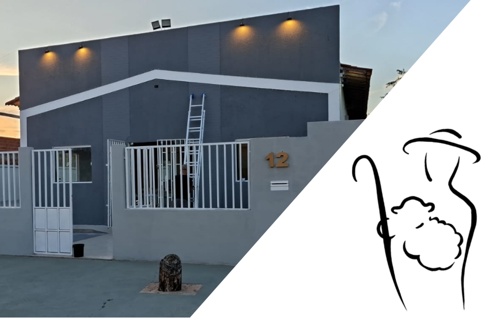

IGREJA BATISTA REGULAR
BOM PASTOR
Vendo ele as multidões, compadeceu-se delas, porque estavam aflitas e exaustas como ovelhas que não têm pastor. E, então, se dirigiu a seus discípulos: A seara, na verdade, é grande, mas os trabalhadores são poucos. Rogai, pois, ao Senhor da seara que mande trabalhadores para a sua seara.